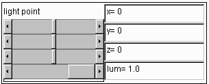

Building a Scene to be Raytraced
The setup panel consists of three panels.
A DisplayCanvasWireFrame is used to visually show how the scene will appear.
A RaytracerSetupButtons class controls most of the setup. It allows the
user to create or modify a scene, and updates the wireframe after each
modification. The last panel holds other panels that allow the user
to adjust an object's properties. The user can use scrollbars to modify
values, which will be displayed in the same panel.
The user can change the point the scene is viewed from. When the user presses
the viewing button, a SetupViewPanel class is created, and passed a pointer
to objects that store the viewing information. The viewing panel that is created
has scrollbars that allow the user to adjust the viewing information. The value
is displayed in text in the view panel and the wireframe image of the
scene is updated to reflect the new viewpoint.

The user can edit or create a light source. The
user can set the position of the center of a point light source, and it's brightness.
When the user creates an object, two panels are created. One is to set the
color properties of the object. These include ambient, diffuse, and specular
color, and the specular coefficient, reflectivity, and transparency.
The other panel is to set the object's geometry.